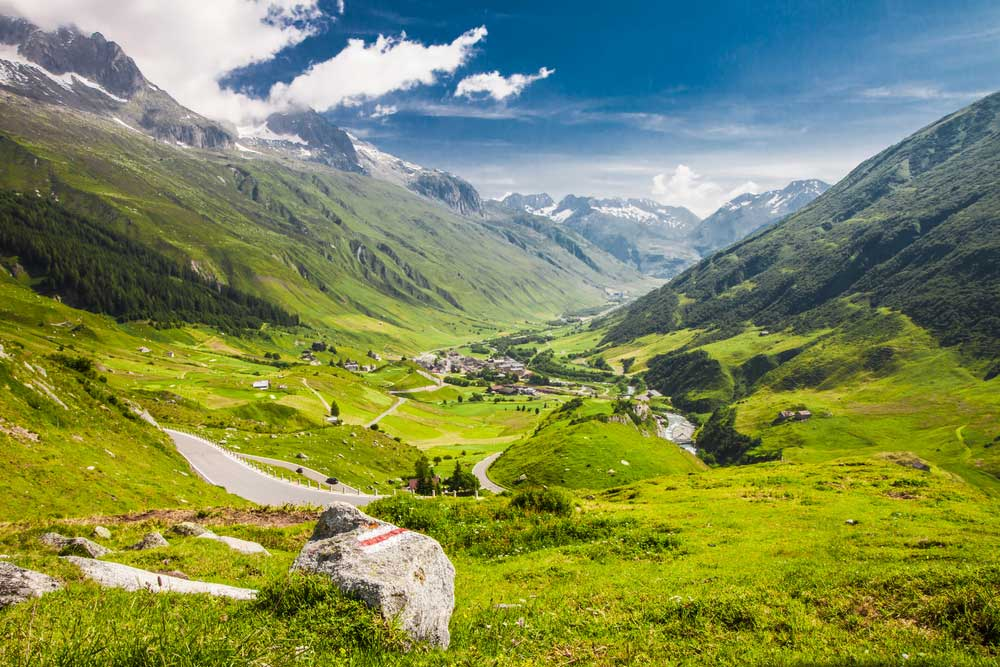

A moon, also known as a natural satellite, is a celestial body that orbits a planet or another planetary body. Unlike planets, moons do not generate their own light; instead, they reflect the light of their parent planet or star, making them visible in the night sky. Moons can vary widely in size, composition, and appearance, and they are found orbiting planets throughout the solar system and beyond.
Moons come in various sizes and types. Some are large, like Jupiter’s moon Ganymede, which is larger than the planet Mercury, while others are much smaller, like the numerous tiny moons orbiting asteroids. The composition of moons can also differ: some are rocky, some are icy, and some have atmospheres or surface features such as craters, mountains, and volcanic activity.
The formation of moons can occur through different processes. Some moons are believed to have formed alongside their parent planets from the same protoplanetary disk of gas and dust. Others might have formed elsewhere in the solar system and were later captured by the planet's gravity. Some moons, particularly the large ones, might have formed from debris created by collisions between their parent planet and other celestial objects.
Moon of Earth
Earth formed about 4.5 billion years ago from the dust and gas surrounding the young Sun, a process that began with the formation of the Solar System.
Solar Nebula and Protoplanetary Disk: After the Sun's formation, the remaining material in the solar nebula began to coalesce into a protoplanetary disk surrounding the young Sun. This disk was composed of gas, ice, and dust.
Accretion of Planetesimals: Small particles in the disk collided and stuck together, forming larger bodies known as planetesimals. These planetesimals further collided and merged to form even larger objects, including protoplanets.
Formation of a Proto-Earth: One of these protoplanets, through a series of collisions and accretions, grew into a large, molten sphere known as Proto-Earth. During this period, Earth was extremely hot, with a molten surface due to frequent impacts and radioactive decay.
Formation of the Moon and Solidification: A significant impact with a Mars-sized body, known as Theia, is believed to have caused a large portion of Earth's outer layer to be ejected, forming the Moon. Following this impact, Earth began to cool and solidify, leading to the formation of the crust and the earliest oceans.
Development of the Atmosphere: Volcanic activity released gases from Earth's interior, including water vapor, carbon dioxide, and nitrogen, contributing to the formation of the early atmosphere. Over time, this atmosphere evolved and became more suitable for life.
Structure of the Earth
Core
The core is the innermost layer of Earth and is divided into two parts: the solid inner core and the liquid outer core. This layer is crucial for generating Earth's magnetic field through the movement of molten iron and nickel.
Inner Core: The inner core is a solid sphere composed primarily of iron and nickel. Despite the extreme temperatures, which can exceed 5,000 degrees Celsius (9,000 degrees Fahrenheit), the inner core remains solid due to the immense pressure at this depth.
Outer Core: Surrounding the inner core, the outer core is a liquid layer of molten iron and nickel. The movement of this liquid metal generates Earth's magnetic field through a process known as the geodynamo.
Magnetic Field Generation: The convective motion of the liquid outer core combined with the rotation of Earth creates a complex magnetic field that extends far beyond the planet, protecting it from solar radiation and helping to navigate compasses.
Mantle
The mantle is a thick, rocky layer that lies between the Earth's crust and core. It is divided into the upper mantle and lower mantle, and is characterized by its semi-fluid behavior, which plays a key role in tectonic activity.
Upper Mantle: The upper mantle extends from the base of the crust down to about 410 kilometers (255 miles). It includes the asthenosphere, a region of partially molten rock that allows for the movement of tectonic plates.
Lower Mantle: Below the upper mantle, the lower mantle extends from about 410 kilometers (255 miles) to 2,900 kilometers (1,800 miles) deep. It is more solid and less convective than the upper mantle but still experiences slow, convective currents.
Tectonic Activity: The mantle's convective currents drive plate tectonics, leading to volcanic activity, earthquakes, and the movement of continents over geological time scales.
Crust
The crust is the Earth's outermost layer, consisting of solid rock. It is relatively thin compared to the mantle and core and is divided into the continental crust and oceanic crust.
Continental Crust: This part of the crust forms the continents and is generally thicker and less dense than the oceanic crust. It is composed primarily of granitic rocks.
Oceanic Crust: The oceanic crust forms the ocean floors and is thinner and denser than the continental crust. It is primarily composed of basaltic rocks.
Plate Tectonics: The Earth's crust is divided into large plates that float on the semi-fluid asthenosphere of the upper mantle. The movement and interaction of these plates cause geological phenomena such as earthquakes, mountain formation, and volcanic eruptions.
Lithosphere
The lithosphere is the rigid outer layer of Earth, encompassing both the crust and the uppermost part of the mantle. It is characterized by its strength and ability to support tectonic plate movements.
Composition: The lithosphere includes the Earth's crust and the uppermost part of the mantle. It extends to a depth of about 100 kilometers (62 miles) and is characterized by its rigidity compared to the underlying asthenosphere.
Tectonic Plates: The lithosphere is divided into several large and small tectonic plates that move over the more fluid asthenosphere. These movements are responsible for many geological processes, including earthquakes and volcanic activity.
Plate Boundaries: At the boundaries of tectonic plates, various geological features and processes occur, such as mountain ranges at convergent boundaries, rift valleys at divergent boundaries, and earthquakes at transform boundaries.
Atmosphere of Earth
Composition
The atmosphere, therefore, turns out to be a useful and evolving blend of gasses tethered on the surface of the Earth and mandatory for supporting life and moderating weather. The main constituents of the atmosphere include Nitrogen that makes up about seventy—eight percent of the atmosphere and Oxygen which contributes about twenty one percent of the atmosphere. Nitrogen is chemically inactive and practically serving as having a balancing effect in the overall atmosphere. Oxygen has the vital role in the respiration process in most of the living things and aids in combustion.
Besides nitrogen and oxygen, atmosphere consists of other gases in small amounts. The atmospheric component that belongs to the group of noble gases is Argon and its concentration reaches approximately 0. Comprising about 93% of the total atmospheric content and is rather non-reactive chemically. The comparatively low concentration of carbon dioxide of roughly 0. 04%, is not negligible since it helps in assisting earth in its retention of heat through greenhouse effect. Essential for weather and the water cycle is water vapor whose concentration also fluctuates.
Layers of the Atmosphere
The atmosphere of Earth can be divided into several layers, which are described by the increase in temperature and work done. The troposphere is the first layer beginning at the surface of the earth going up to about 8-15 km (5-9 miles). It accommodates most of the mass of the atmosphere and it’s where phenomena like weather take place. Troposphere has been found to contain the greater part of the water vapor which is very vital in climate and weather conditions.
The layer of air that comes right above troposphere is known as stratosphere and it stretches up to about 50 kilometers ( 31 miles to be precise) in the sky. This layer contains the ozone layer which rigidly Transmission and disperses the ultra violet radiation that emanates from sun hence protecting living organisms from the deadly ultra violet radiations. The stratosphere is one of the layers that reveals an increase in temperature with height mainly due to the absorption of radiation by the ozone layer.
The mesosphere lies at even higher altitudes above the stratosphere and extends up to 85 km from the Earth’s surface. Here, with height, temperatures drop further; it is the layer through which most meteors disintegrate on entering and cause what is known as ‘shooting stars.’ The mesosphere is very important in shielding the earth from space objects.
The final layer is the thermosphere which is further up, starting from 85 kilometers (53 miles) from the surface of the earth going up to 600 kilometers (373 miles). This layer is characterized by higher temperature as one ascends higher up the earth’s surface. Auroras happen at thermosphere which is a layer of the earth ‘s atmosphere that experiences interaction of high energy particles with the earth’s magnetic field.
Atmospheric Processes
Different mechanisms that occur in the atmosphere are crucial in controlling weather, climate as well as the quality of the air.
The Greenhous Effect
A significant atmospheric process Of global warming it is where heat is trapped by gases in the atmosphere. Some of the major greenhouse gases inclusive of carbon dioxide – CO₂, methane – CH₄, and water vapor – H₂O have important roles in this process. Light, which originates from the sun within the atmosphere and gets to the earth’s surface, is next reflected as heat or infrared radiation. Green house gases trap this heat and reflect it back to the atmosphere.
This natural cycle is very important in sustaining the temperatures prevailing on earth that is suitable for living organisms. Without it, our planet would too cold for most life forms to exist which is why this article is speaking about its importance. But human activities like burning of fossil fuels and deforestation has helped to increase the level of greenhouse gases hence has helped to enhance this effect. This enhancement results to global warming; there will be higher temperatures; ice caps will also melt: there will be frequent incidences of severe weather conditions.
The Water Cycle
Hydrological cycle is defined as movement of water within the global atmosphere, oceans and on the surface of this planet. Driven by solar energy, this cycle involves several stages: We also have evaporation, condensation, precipitation and so on.
Evaporation is when water from seas, lakes, and rivers is changed to vapor because of heat from the sun. This water vapor rises into the atmosphere and cools down, to become water droplets hence forming clouds. When these clouds fill with water, then they precipitate and return water to the earth through different categories of precipitation like rain, snow, or hail.
Climate as well as support of ecosystems depends on the occurrences of water cycle. It helps to restore the water in the aquifers, helps green plants grow, and helps balance the amount of water on earth. Disturbances to this cycle for example fluctuations in precipitation or higher evaporation resulting from global warming seriously affect weather and water supplies.
Atmospheric Circulation
Atmospheric circulation is the process whereby air in the earth’s atmosphere moves in large circles because of the differences in temperature and Coriolis force. This circulation reformulates heat and moisture belts around the world and thus affects the weather and climate.
Energy from the sun is distributed unevenly on the Earth’s surface and leads to the formation of temperature differences through which warm air ascends, and cool air descends. These differences in temperature result into pressure systems and therefore winds. Winds are deflected and organized into bands called wind belts because of the Coriolis effect, dependent on the earth’s rotation.
The main wind belts are trade winds in the tropics, westerlies in the middle latitudes, and polar easterlies near the poles. These winds as well as mechanical forces that exist between two different masses of air help to create contemporary weather and control the climate of the Earth.
Human Impact on the Atmosphere
Human activities have a profound influence on the atmosphere, leading to significant environmental issues such as air pollution, climate change, and ozone depletion. Each of these issues has far-reaching consequences for both ecosystems and human health.
Air Pollution
Air pollution occurs when contaminated matter is discharge into the atmosphere by human, animal or natural activities such as vehicle emission, Industries, and agriculture. For instance, the mobile sources like cars and trucks emit gases like carbon monoxide (CO), nitrogen oxide (NOx) and particulate matter (PM). Carbon monoxide impairs the body’s capacity to transfer oxygen through the blood by binding with the hemoglobin and causing disruptions in the respiratory and cardiovascular systems due to the inability to synthesize adequate levels of red blood cells. NO contributes to the development of ground level ozone which is known to worsen asthma and other respiratory diseases.
Sulfur oxide such as sulfur dioxide (SO₂) and other emissions are made throughout the burning of fossil fuels in various industries for instance in energy production or manufacturing process. Sulfur dioxide reacts with water vapor in the air to produce droplets of sulfuric acid which in turn causes precipitation –acid rain. Acid rain harms vegetation, the soil, and water sources and is therefore risky to the ecosystems and food production.
Sustainable agriculture, which may regard rearing of livestock, let forth methane CH₄, a green house gas that enhances the incidents of global warming. Moreover, by employing of fertilizers, ammonia (NH₃) and other compounds which, cause air pollution and especially smog are likely to be released.
Climate Change
The major cause of climate change is the enhanced emission of green house gases within the atmosphere. CO₂, CH₄, and N₂O emitted into the atmosphere act like a blanket by capturing heat from the sun; this process is called global warming.
For instance, burning of Fossil fuels such as coal oil and natural gas to produce energy emissions very large volumes of CO₂ in the atmosphere. This leads to enhancement of greenhouse gases concentration in the atmosphere, which in turn results to enhanced mean global temperatures, thus; change in climate. For instance, more heat waves are observed more frequently or last longer, changes in precipitation and increased intensity of storms is observed.
The consequences of climate change are very wide ranging. Glaciers and ice caps are melting to form sea levels and pose a big threat to coastal towns with flood and eroding activities. Climate shifting alters the environment in form of temperature and precipitation regimes thus influencing species movement, food availability and general conditions of habitats. Also, best weather conditions become worse and this affects agriculture as well as human settlements as seen through storms, hurricanes, and droughts.
Ozone Depletion
Ozone depletion can be defined as the reduction of the density of ozone in the stratosphere; this is the sponge of the earth’s atmosphere where the larger part of UV-C, UV-B and much of UV-A radiation is absorbed. Some of the tasks that human beings have orginally provoked consist of releasing ozone-depleting substances which include chlorofluorocarbons (CFCs) and other related substances.
Although CFCs were formerly applied in refrigeration, air conditioning, and aerosol propellants the chemical compounds release chlorine and bromine atoms in the stratosphere. These chlorine and bromine atoms further interact with the ozone molecules and destroy the ozone layer through such process. An important consequence of this effect refers to the appearance of the so-called “ozone hole” over the Antarctic and more direct UV radiation on the Earth.
The abnormal effects that are as a result of a high level of UV radiation include the following. On human health, it increases the inclination to develop skin cancer, cataract, and other complications affecting the eye. Thus, high levels of UV cause negative effects on phytoplankton in the oceans, which is the primary food source for higher organisms and can alter plant growth on the land, which also affects the supplies of food and variety.
Surface Features of Earth
Earth's surface is a complex mosaic of diverse features that include landforms, bodies of water, and geological structures. These features shape our planet and influence various environmental processes. They can be broadly categorized into major landforms and bodies of water, each playing a crucial role in the Earth's systems.
Landforms
Mountains
Mountains are large landforms that rise prominently above their surroundings, typically formed by tectonic forces such as the collision of tectonic plates. These forces can fold, fault, or uplift the Earth's crust. For example, the Himalayas, including Mount Everest, were formed by the collision of the Indian and Eurasian plates. Mountains can significantly impact weather patterns by influencing wind flow and precipitation. Their high altitudes create distinct climatic zones and support diverse ecosystems ranging from alpine meadows to snowy peaks.
Hills
Hills are smaller than mountains and generally have a rounded summit. They can be formed through a variety of geological processes, including erosion of higher elevations or the buildup of sediment. Hills can be found in many regions and are often characterized by a more gentle slope compared to mountains. The rolling hills of the English countryside or the Appalachians in the eastern United States are examples of hills shaped by erosion and tectonic activity.
Plateuas
Plateaus are flat or gently sloping elevated areas that have been uplifted by tectonic forces or formed through volcanic activity. The Colorado Plateau in the United States is an example, characterized by its flat-topped mesas and canyons. Plateaus are often surrounded by steep cliffs or escarpments and can provide unique habitats and geological features due to their elevated position.
Valleys
Valleys are low-lying areas between hills or mountains, typically formed by river erosion or glacial activity. River valleys, such as the Nile Valley in Egypt, are formed by the action of rivers cutting through rock and sediment over time. Glacial valleys, like those found in the Swiss Alps, are carved by the movement of glaciers. Valleys often host fertile lands and are important for agriculture and human settlement.

Deserts
Deserts are arid regions with very low precipitation, leading to sparse vegetation and distinctive landforms such as dunes, rocky plateaus, and dry riverbeds. The Sahara Desert in Africa is one of the largest and most well-known deserts, characterized by its vast sand dunes and extreme temperatures. Deserts often have unique ecosystems adapted to harsh conditions, including specialized plant and animal species.
Plains
Plains are broad, flat expanses of land with minimal elevation changes. They are often formed by sediment deposition from rivers, glaciers, or wind. The Great Plains of North America are a prime example, known for their fertile soils and extensive agricultural activity. Plains can be found in many parts of the world and are crucial for agriculture and human habitation due to their flat terrain and nutrient-rich soils.
Bodies of Water
Oceans
Oceans are the largest bodies of saltwater on Earth, covering about 71% of the planet's surface. The five major oceans—Pacific, Atlantic, Indian, Southern, and Arctic—are integral to the Earth's climate system and support a vast array of marine life. The Pacific Ocean, the largest and deepest, contains the Mariana Trench, the lowest point on Earth's surface. Oceans play a key role in regulating climate, driving weather patterns, and providing resources and habitats for countless species.
Seas
Seas are smaller than oceans and are partially enclosed by land. They are typically connected to oceans but can have distinct characteristics due to their location and size. The Mediterranean Sea, for instance, is a large, salty body of water connected to the Atlantic Ocean but surrounded by Europe, Africa, and Asia. Seas often have significant economic and cultural importance due to their proximity to human settlements and their role in trade and transportation.
Lakes
Lakes are inland bodies of standing freshwater or saltwater. They vary greatly in size and depth and can be formed by tectonic activity, volcanic activity, glacial erosion, or river meandering. The Great Lakes in North America, including Lake Superior, are the largest group of freshwater lakes in the world by total area. Lakes can support diverse ecosystems and are important for freshwater supply, recreation, and industry.
Rivers
Rivers are flowing bodies of water that usually originate from springs, rain, or melting snow and flow towards larger bodies of water like seas or oceans. Major rivers such as the Amazon, Nile, and Yangtze are crucial for transporting water, nutrients, and sediments across landscapes. Rivers play a vital role in shaping landforms, creating valleys, and supporting ecosystems and human activities.
Glaciers
Glaciers are large masses of ice that form in regions where snow accumulation exceeds melting over long periods. They flow slowly over land and can carve out valleys and shape landscapes. The Greenland and Antarctic ice sheets are the largest glaciers, containing the majority of the world's freshwater ice. Glaciers are essential indicators of climate change and play a role in sea level regulation as they melt.
Geological Structures
Volcanoes
Volcanoes are openings in the Earth's crust through which molten rock, ash, and gases can escape. They can form at tectonic plate boundaries or over hot spots in the mantle. The eruption of Mount Vesuvius in AD 79 is a historical example of volcanic activity that had a profound impact on nearby human settlements. Volcanoes contribute to land formation and can create fertile soils through the deposition of volcanic ash and lava.
Canyons
Canyons are deep, narrow valleys with steep sides, often carved by rivers over millions of years. The Grand Canyon in the United States is one of the most famous canyons, formed by the Colorado River’s erosion of the surrounding rock. Canyons reveal geological layers and offer insights into Earth's history, while also providing dramatic landscapes and diverse habitats.
Geological Activity
Earth’s geological activity is a fundamental aspect of its dynamic nature, driven by a variety of processes within the planet's interior and at its surface. These processes include plate tectonics, volcanic activity, earthquakes, erosion, and sedimentation. Each of these activities plays a crucial role in shaping the planet's surface and influencing its climate and ecosystems.
Plate Tectonics
Plate Tectonics is a key factor in Earth’s geological activity. According to this theory, the Earth's lithosphere is divided into several large and small plates that float on the semi-fluid asthenosphere beneath them. These tectonic plates interact at their boundaries, leading to various geological phenomena. At divergent boundaries, where plates move apart, new crust is created as magma rises from the mantle and solidifies at mid-ocean ridges, such as the Mid-Atlantic Ridge. At convergent boundaries, where plates collide, one plate may be forced beneath another in a process known as subduction, forming deep ocean trenches and volcanic arcs, like the Mariana Trench. Transform boundaries, where plates slide past each other horizontally, can result in significant seismic activity, as seen along the San Andreas Fault in California.
Volcanic Activity
Volcanic Activity is another critical geological process. Volcanoes form when magma from the Earth’s mantle erupts to the surface. The nature of volcanic activity depends on the type of plate boundary or hot spot location. At divergent boundaries, volcanic activity is often seen along mid-ocean ridges, creating new oceanic crust. In contrast, convergent boundaries can produce volcanic arcs, such as the Ring of Fire around the Pacific Ocean, due to subduction zones. Hot spots, which are stationary regions of intense heat in the mantle, can create volcanic chains independent of plate boundaries. The Hawaiian Islands, for example, were formed by a hot spot beneath the Pacific Plate.
Earthquakes
Earthquakes occur as a result of the sudden release of energy along faults or fractures in the Earth’s crust, generating seismic waves that shake the ground. These seismic events can happen at any type of plate boundary. Fault lines, where rocks on either side of a fracture move relative to each other, are common sites for earthquakes. Areas near plate boundaries, like the Pacific Ring of Fire, experience frequent seismic activity. Earthquakes can cause surface ruptures, landslides, and even tsunamis, impacting communities and environments.
Erosion and Sedimentation
Erosion and Sedimentation are processes that shape the Earth's surface by the movement of soil and rock materials. Erosion involves the removal and transport of these materials by agents such as water, wind, ice, and gravity. Rivers and streams, for example, erode landscapes by transporting sediment from mountains to valleys. Glaciers also play a role in erosion by carving out valleys. Sedimentation, on the other hand, occurs when eroded materials are deposited in new locations, forming sedimentary layers in riverbeds, lakes, and ocean basins. Over time, these sediments can become compacted and cemented into sedimentary rock, preserving a record of Earth's geological history.
Orogeny
Mountain Building, or orogeny, results from tectonic processes like plate collisions and volcanic activity. When continental plates collide, the crust can be compressed and folded to form mountain ranges, as seen in the Himalayas, which were created by the collision of the Indian Plate with the Eurasian Plate. Volcanic mountains are formed by volcanic eruptions that accumulate material around a vent, such as Mount Fuji in Japan. Additionally, fault-block mountains can form through faulting and uplift, where blocks of Earth's crust are raised relative to surrounding areas, exemplified by the Sierra Nevada Mountains in the western United States.
Soil Formation
Soil Formation is a gradual process involving weathering, biological activity, and the accumulation of organic material. Weathering breaks down rocks into smaller particles through physical, chemical, and biological processes, contributing to soil formation. Organic matter, or humus, accumulates from decomposed plant and animal material, enriching the soil and improving its fertility. Soils develop distinct layers or horizons, including topsoil, rich in organic matter; subsoil, with minerals and nutrients; and bedrock or parent material, the source of soil minerals.
Orbit and Rotation of Earth
Earth’s orbit and rotation are fundamental aspects of its movement in space, influencing various aspects of our daily lives, including day and night, seasons, and climate. Understanding these concepts is crucial for grasping how our planet interacts with the Sun and other celestial bodies.
Orbit
Earth's Orbit refers to the path Earth follows as it moves around the Sun. This orbit is not a perfect circle but an ellipse, which means it is slightly oval-shaped. Earth completes one full orbit around the Sun in about 365.25 days, which is why we have a year consisting of roughly 365 days. The shape of Earth’s orbit is known as an elliptical orbit, and this slight oval shape causes the distance between Earth and the Sun to vary throughout the year.
At its closest point to the Sun, known as perihelion, Earth is about 147 million kilometers (91 million miles) away. This occurs around early January. At its farthest point, known as aphelion, Earth is about 152 million kilometers (94.5 million miles) away, which happens around early July. Despite these variations in distance, the change in distance has a minimal effect on the seasons; rather, the tilt of Earth’s axis plays a more significant role.
Rotation
Earth's Rotation is the spinning of the planet around its own axis, which is an imaginary line that runs from the North Pole to the South Pole. This rotation is what causes day and night. Earth completes one full rotation approximately every 24 hours. This period is known as a solar day. As Earth rotates, different parts of the planet are exposed to sunlight or are in shadow, creating the cycle of day and night that we experience.
The axis of Earth is tilted relative to its orbital plane around the Sun by about 23.5 degrees. This tilt is responsible for the changing seasons. As Earth orbits the Sun, different parts of the planet receive varying amounts of sunlight at different times of the year. When the Northern Hemisphere is tilted toward the Sun, it experiences summer with longer daylight hours and warmer temperatures. Conversely, when the Northern Hemisphere is tilted away from the Sun, it experiences winter with shorter days and cooler temperatures. The Southern Hemisphere experiences opposite seasons at the same time.
The rotation of Earth also has a significant impact on the planet's weather and climate. The rotation creates the Coriolis effect, which influences wind patterns and ocean currents. For example, in the Northern Hemisphere, the Coriolis effect causes moving air and water to turn to the right, creating clockwise circulation patterns. In the Southern Hemisphere, it turns to the left, creating counterclockwise patterns. This effect plays a critical role in shaping global climate patterns and weather systems.
Magnetic Field
Earth’s magnetic field is a crucial aspect of our planet, extending far beyond its surface into space and playing a vital role in protecting life on Earth. This magnetic field is generated by the movement of molten iron and other metals in the outer core of Earth, a process that is essential for many aspects of our planet’s environment.
Generation of Magnetic Field
The magnetic field is created by the geodynamo process, which occurs in Earth’s outer core. This layer is composed of molten iron and nickel, which are in constant motion due to convection currents caused by the heat from the inner core. As these molten metals move, they generate electric currents. According to the dynamo theory, these electric currents produce a magnetic field. The movement of the molten metal, combined with the rotation of Earth, creates a complex and dynamic magnetic field.
Structure of Magnetic Field
Earth’s magnetic field extends into space and is roughly aligned with the planet’s rotational axis. It resembles a giant bar magnet tilted about 11 degrees from the axis of rotation. The magnetic field lines emerge from the South Pole and curve around the planet to enter again at the North Pole, forming a protective shield known as the magnetosphere. This field is not perfectly symmetrical but is influenced by various factors, including solar wind.
Magnetosphere and its Protection
The magnetosphere is the region of space around Earth that is controlled by its magnetic field. It acts as a protective barrier against the solar wind, which is a stream of charged particles emitted by the Sun. Without the magnetosphere, these solar particles could strip away Earth’s atmosphere and harm living organisms. The interaction between the solar wind and the magnetosphere also creates phenomena such as the auroras, which are colorful displays of light near the polar regions. These lights occur when charged particles from the solar wind collide with gases in Earth’s upper atmosphere.
Magentic Poles and Geographic Poles
The geographic poles of Earth, where the rotational axis intersects the surface, are different from the magnetic poles. The magnetic poles are the points where Earth’s magnetic field lines are vertical. Currently, the North Magnetic Pole is located in the Arctic Ocean, north of Canada, while the South Magnetic Pole is near Antarctica. These magnetic poles shift over time due to changes in the flow of molten metals in the outer core, a phenomenon known as geomagnetic secular variation.
What makes Earth special?
There are many reasons that contribute to making Earth what it is. I will list some of them.
Distance from the Sun
First things first. We are in the perfect distance from the Sun that makes our planet habitable. This is the most essential factor. Why? Because temperatures are just right for liquid water to exist on the planet's surface. If Earth were closer to the Sun, it would be too hot, and water would evaporate. If it were farther away, it would be too cold, and water would freeze. The presence of liquid water is essential for all known forms of life, making Earth’s position in the solar system a crucial factor for its habitability.
Atmosphere
Next thing that is very important for our planet is atmosphere. Earth’s atmosphere is composed of a mixture of gases, including nitrogen (78%), oxygen (21%), and trace amounts of other gases such as carbon dioxide, argon, and water vapor. This is very special and essential. Why? Well look at these:
Oxygen is essential for the respiration of most life forms.
Ozone layer protects living organisms from harmful ultraviolet (UV) radiation from the Sun.
Greenhouse gases like carbon dioxide and water vapor trap heat in the atmosphere, maintaining a stable and warm climate through the greenhouse effect.
The atmospheric pressure is sufficient to keep water in its liquid state, which is necessary for life.
Water
We are in the right spot, we have air, what is next? Absolutely, it is water. Water is fundamental to life, and Earth is unique in our solar system for its abundance of liquid water. Oceans cover about 71% of Earth's surface, providing a habitat for marine life and playing a key role in the global climate system. Water is also essential for many chemical reactions that sustain life, including photosynthesis and cellular respiration.
Magnetic Field
We have basic elements to live on Earth. Now, it is time to think about our safety from external dangeours. What comes for us to help? Magentic Field. Earth’s magnetic field, generated by the movement of molten iron in its outer core, extends far into space and forms a protective shield known as the magnetosphere. This field protects the planet from solar and cosmic radiation by deflecting charged particles from the Sun, which could otherwise strip away the atmosphere and harm living organisms. The magnetosphere also contributes to the stability of the atmosphere over geological time scales.
Geological Activity
We achieved basic needs and safety so we are basically able to live. But how to sustain life on Earth? Well, Earth takes care this for itself. Earth's internal geological activity, driven by heat from the planet's core, leads to plate tectonics, volcanism, and the recycling of carbon and other essential elements. Plate tectonics play a critical role in the carbon cycle, which regulates atmospheric carbon dioxide levels and, consequently, Earth’s climate. Volcanic activity releases gases and minerals from the Earth's interior, which are essential for creating and sustaining the atmosphere and oceans.
Biodiversity and Ecosystems
We almost have everything. But I hear some rumbling. Oh, it is my stomach. We have water for thirst but what about hunger? Here we go! The diversity of life on Earth and the complex ecosystems that have developed over time contribute to the planet’s habitability. Plants and other photosynthetic organisms produce oxygen and form the base of the food chain. Animals, fungi, and microorganisms interact in intricate ways that recycle nutrients and maintain the balance of ecosystems. These interactions create a stable environment that supports a wide range of life forms.
Fun Facts about The Earth
Forget Saturn—Earth has its own icy rings! They’re not made of rocks and dust but of tiny ice particles that orbit the planet. These “rings” are created by icy comets and are most visible from space, but don’t worry, they’re not as flashy as Saturn’s rings. Earth just prefers to keep its bling on the down-low!
The Mariana Trench is Earth's deepest dive spot, reaching about 36,000 feet below the ocean surface. That’s like stacking over 60 Empire State Buildings on top of each other! If you took a dive down there, you’d need a submarine and a very strong will to see what’s lurking in the dark depths.
Earth isn’t just spinning and orbiting; it’s also subtly changing shape! The planet’s weight shifts over time due to melting ice and shifting water. Imagine Earth on a cosmic diet plan—losing weight here, gaining it there, all while trying to keep things balanced.
There’s a place on Earth called the “Point Nemo,” which is the oceanic pole of inaccessibility. It’s so remote that the nearest humans are over 1,000 miles away! If you find yourself feeling lonely, just remember that Point Nemo is even more isolated, where you’re likely to hear only the sound of your own echo.
Earth’s magnetic poles flip-flop from time to time. Every several hundred thousand years, the north and south magnetic poles swap places in a magnetic field dance-off. Don’t worry, though—this flip isn’t like flipping a light switch; it’s a slow process that doesn’t mess up your compass too much.
Quiz
1. How did the Hubble Deep Field observation in 1995 change our understanding of the universe?
2. Describe one contribution of ancient Babylonians to early astronomy.
3. Explain the impact of the Islamic Golden Age on the development of astronomy during the medieval period.
4. How did the heliocentric model proposed by Copernicus revolutionize our understanding of the solar system?
5. What are some of the key research areas in contemporary astronomy, and why are they significant?